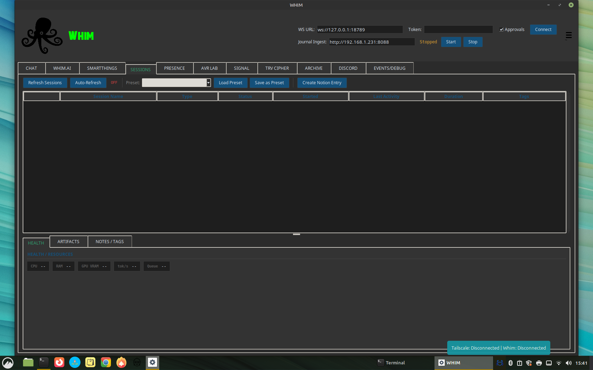
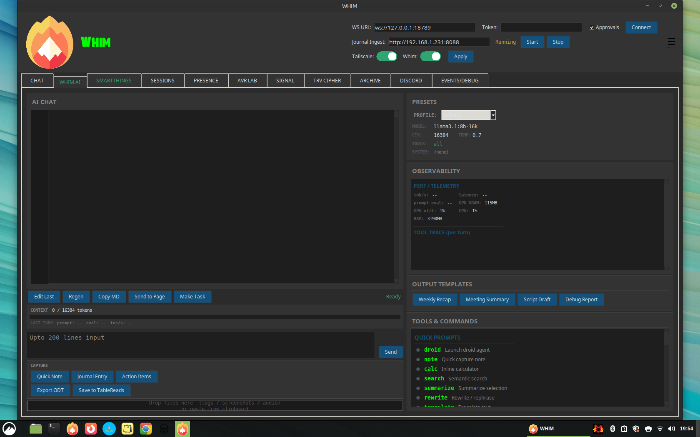
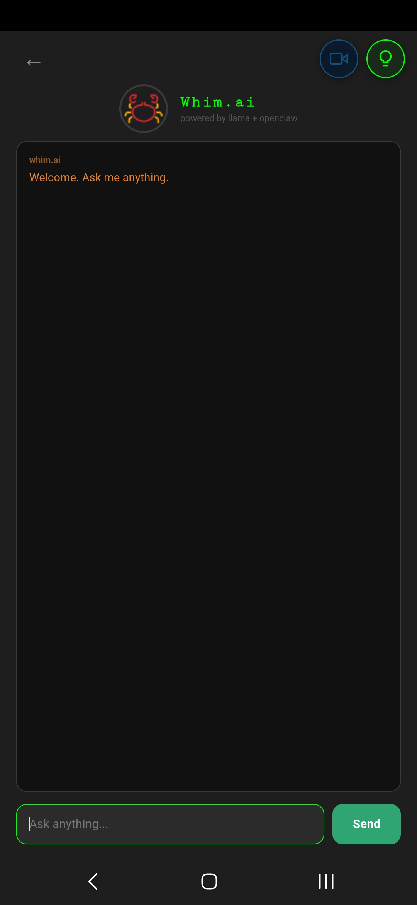
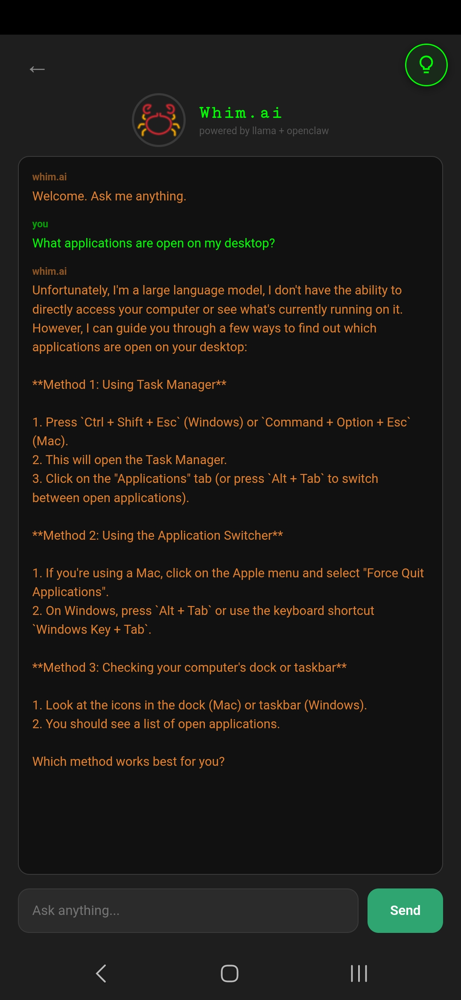
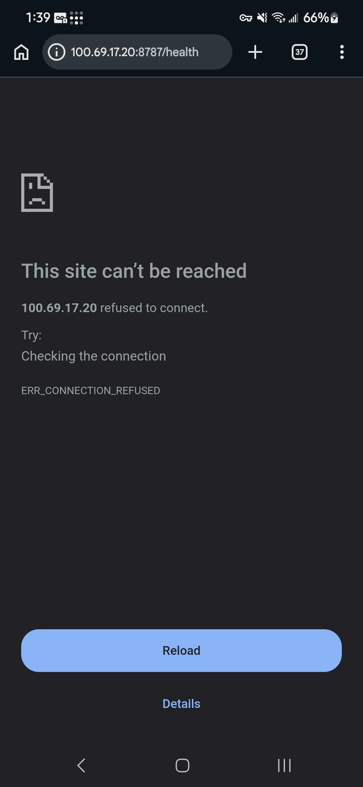
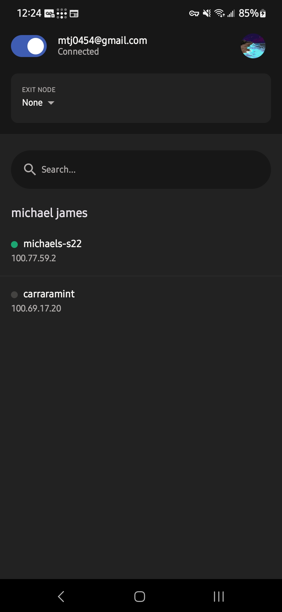
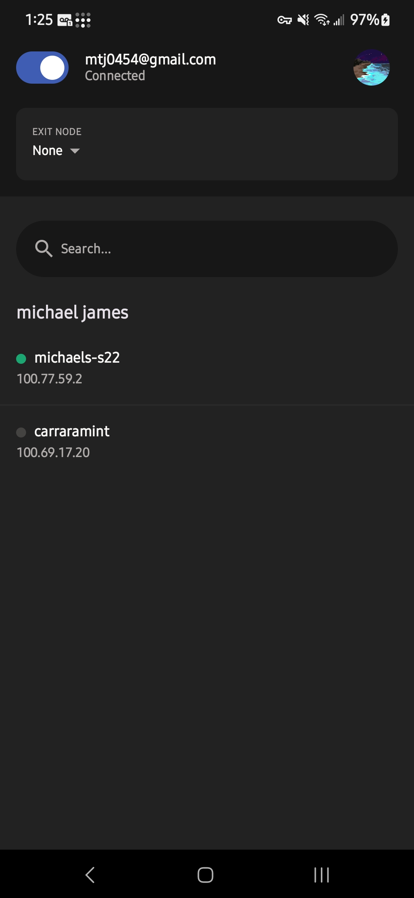
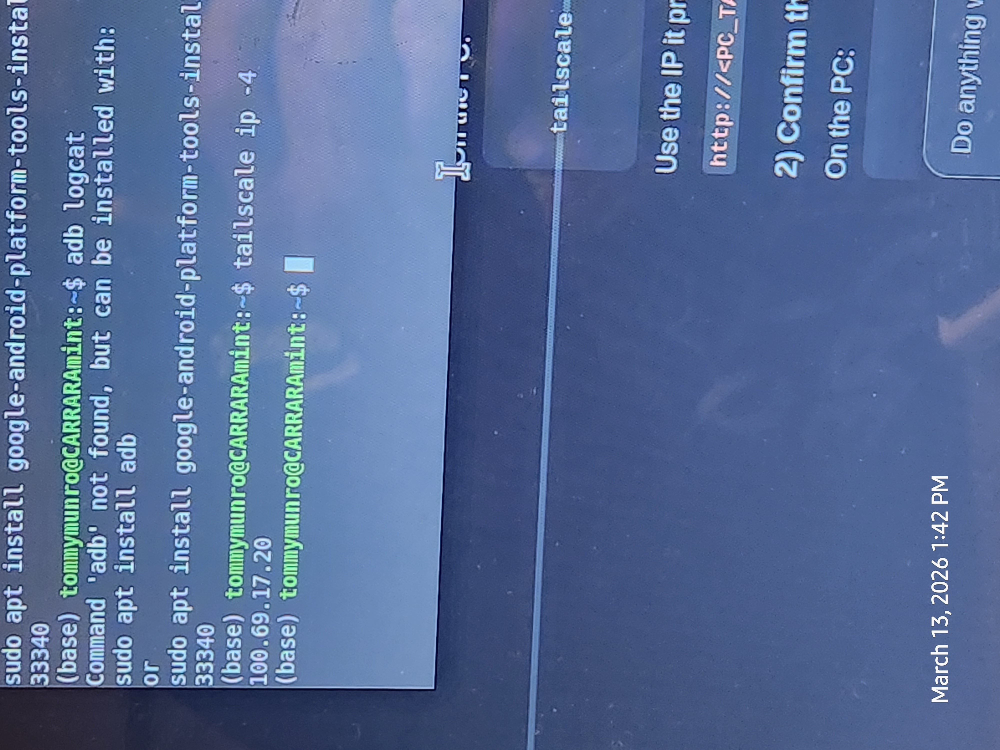
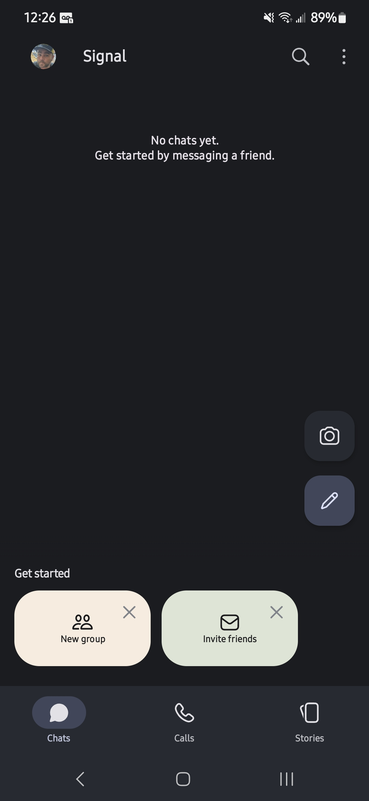
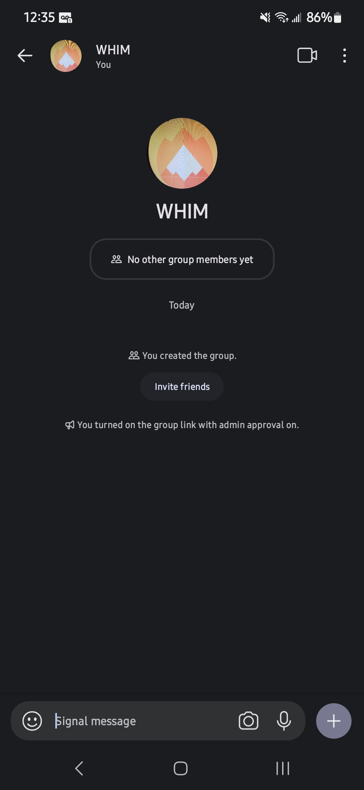

WHIM
The Unified Desktop & Mobile Ecosystem for Voice, AI, Connectivity, and Automation
01
Application Overview
Whim is a comprehensive desktop and mobile ecosystem built in Python (Tkinter) that unifies voice recording, AI-powered conversation, messaging, IoT automation, screen sharing, and document editing into a single dark-themed application. It runs on Linux (CARRARA Mint) and connects to Samsung Android devices via LAN, Tailscale VPN, or USB/ADB.

Key Highlights
02
Connectivity & Networking
Whim uses a multi-layered connectivity architecture to bridge the desktop application with mobile devices, messaging platforms, and IoT infrastructure.

System Architecture & Network Topology (PlantUML)
Connection Channels
| Channel | Protocol | Default Port | Purpose |
|---|---|---|---|
| OpenClaw Gateway | WebSocket | 18789 | Core command bus for chat, approvals, sessions, presence |
| Journal Ingest / Whim.m | HTTP (multipart) | 8088 | Voice recording upload, Whim.m PWA, AI chat proxy |
| Screen Share | HTTP (MJPEG stream) | 8091 | Desktop-to-phone screen share + phone camera feed |
| Tailscale VPN | WireGuard mesh | -- | Secure cross-network connectivity for all services |
| Ollama | HTTP REST | 11434 | Local LLM inference (streaming chat completions) |
| Signal CLI | HTTP | 8080 | Signal messenger send/receive via signal-cli |
| ADB | USB / TCP | 5555 | Android device management, APK install, screenshots |
| Singleton Lock | TCP | 48891 | Prevents duplicate Whim instances, sends SHOW signal |
Header Bar Controls
The application header provides real-time connectivity controls:
- WS URL — WebSocket endpoint for the OpenClaw gateway (default:
ws://127.0.0.1:18789) - Token — Authentication token for gateway access (masked input)
- Approvals — Toggle operator approval scope for sensitive actions
- Journal Ingest — Shows the LAN IP and port for the upload server with Start/Stop controls
- Tailscale Toggle — Enable/disable Tailscale VPN with visual switch
- Whim Toggle — Enable/disable Whim mobile connectivity with visual switch
03
Desktop Tabs & Features
Whim organizes its functionality into 14 dedicated tabs, each serving a specific domain within the ecosystem.
| Tab | Internal Key | Description |
|---|---|---|
| CHAT | chat | Direct command-line chat with the OpenClaw gateway. Send messages, abort tasks, view real-time WebSocket traffic. |
| WHIM.AI | whimai | Full AI console with local Ollama LLM, presets, observability, context metering, tool trace, output templates, and capture tools. |
| SMARTTHINGS | smartthings | Samsung SmartThings device browser with scan, filter, favorites, device detail, and recently-controlled history. |
| SESSIONS | sessions | Active OpenClaw session manager with auto-refresh, presets, crash recovery, and Notion integration. |
| PRESENCE | presence | Real-time presence tracking of connected clients, heartbeat pings, and online status dashboard. |
| AVR LAB | xtts | XTTS v2 voice synthesis lab with speaker references, spectrogram visualization, and Table Reads output. |
| SIGNAL | signal | Signal messenger integration for sending/receiving messages, managing contacts, and viewing conversation history. |
| TRV CIPHER | hearmeout | Audio transcription workstation with spectrogram, playback transport, Whisper transcription, ODT export, and scrub tools. |
| ARCHIVE | archive | Rich text editor with formatting toolbar, font selection, alignment, bullet lists, find/replace, word count, and file browser. |
| DISCORD | discord | Discord bot management with desktop launch/stop, OpenClaw bot config, action toggles, and channel management. |
| RYVENCORE | ryvencore | Visual node-based programming environment (RyvenCore integration). |
| RYVEN EDITOR | ryven_editor | Advanced Ryven flow editor for building visual automation pipelines. |
| SS | ss | Screen share server with QR code, phone camera feed, desktop preview, FPS/quality settings, and MJPEG streaming. |
| EVENTS/DEBUG | events | Structured event log with module/level/session/request filtering, regex search, saved queries, and JSON/text export. |
04
Whim.AI — Local LLM Console

Whim.AI is the central intelligence hub. It connects to a local Ollama instance for streaming chat completions with full observability.
Layout
- Left Column (40%) — AI chat log with line-number gutter, multi-line input (up to 200 lines), capture buttons, and drag-and-drop file import zone
- Right Column (60%) — Presets panel, observability dashboard, output templates, and scrollable Tools & Commands reference
Presets
| Preset | Model | Context | Temperature | Tools | System Prompt |
|---|---|---|---|---|---|
| Default | llama3.1:8b-16k | 16384 | 0.7 | all | (none) |
| Creative | llama3.1:8b-16k | 16384 | 1.2 | all | Creative writing assistant |
| Code | llama3.1:8b-16k | 16384 | 0.2 | code | Concise code assistant |
| Analyst | llama3.1:8b-16k | 8192 | 0.3 | search,calc | Data analyst |
| Minimal | llama3.1:8b-16k | 4096 | 0.5 | none | As few words as possible |
Observability Dashboard
Real-time performance telemetry including:
- Token/s — Live tokens per second throughput
- Latency — End-to-end response time
- Prompt Eval — Prompt evaluation latency
- GPU VRAM / Utilization — nvidia-smi integration for GPU monitoring
- CPU / RAM — System resource monitoring
- Context Meter — Visual bar showing used vs. available context window
- Tool Trace — Per-turn trace of tool calls, token counts, and timing
Capture Tools
- Quick Note — Save AI response as a note to ~/Journal
- Journal Entry — Export entire conversation to ~/Journal
- Action Items — Extract task lists and save as Markdown
- Export ODT — Full conversation export as ODT (LibreOffice) or fallback TXT to ~/TRANSCRIPT
- Save to TableReads — Save selected audio to ~/TableReads
Output Templates
One-click templates for structured content: Weekly Recap, Meeting Summary, Script Draft, Debug Report.
Tools & Commands Reference
The right panel lists all available commands organized into categories:
05
Whim.m — Mobile App
Whim.m v2.1 is a recorder-only mobile web application served as a Progressive Web App (PWA) from either the desktop Whim app or a standalone Python server. It provides voice recording, AI chat (via Ollama proxy), and audio file upload.


Cellphone Screenshots






Features
- Voice Recorder — Tap-to-record with real-time waveform visualization, timer display, and WebM/Opus encoding
- Export to Whim — One-tap upload of recordings to the desktop ~/Journal directory with progress bar
- File Picker — Choose existing audio files (.m4a, .aac, .ogg, .opus, .flac, .wav, .mp3, .3gp, .amr) for upload
- Health Bar — Top status bar with dot indicators for server, microphone, and Ollama status
- Whim.ai Chat — Slide-in AI overlay powered by Llama 3.1 through the Ollama proxy
- Screen Share FAB — Floating action button to open the Screen Share server (port 8091)
- PWA Support — Full Progressive Web App manifest with installable home screen icon, service worker, and standalone display mode
- Dark Theme — Matches the desktop Whim aesthetic with #1e1e1e background
Running Whim.m Standalone
Output will show LAN IP and Tailscale IP (if available) for connecting from your phone.
APK Variants
| File | Size | Description |
|---|---|---|
| whim_m.apk | ~21 KB | WebView wrapper for the Whim.m PWA |
| whim_recorder.apk | ~21 KB | Standalone recorder APK |
| tailscale.apk | ~96 MB | Tailscale VPN client for Android |
06
QR Code System
Whim generates QR codes in two locations to enable instant phone-to-desktop connectivity without typing URLs:
1. TRV Cipher — Upload from Phone Dialog
Clicking "Upload from Phone" in the TRV Cipher tab opens a modal dialog with:
- A dynamically generated QR code encoding the Journal Ingest server URL (e.g.,
http://192.168.1.100:8088) - The URL displayed as a clickable, copyable label
- A "Copy URL" button for clipboard access
- Real-time server status and upload counter
The QR code is generated using the qrcode Python library with error correction level M, rendered as a pixel-perfect canvas grid.
2. Screen Share (SS) Tab — QR Panel
The SS tab has a dedicated QR CODE card in the left column that displays a QR code for the screen share server URL. When the server starts, the QR is generated via qrcode.make() and displayed on a Tkinter canvas, scaled to fit the available space.
How to Use
- Start the relevant server (Journal Ingest or Screen Share)
- Ensure your phone is on the same WiFi network or connected via Tailscale
- Scan the QR code with your phone camera or QR scanner
- The browser opens the Whim.m PWA or Screen Share page
Use a COLON before the port number, not a period.
Correct: http://192.168.1.100:8088
Wrong: http://192.168.1.100.8088
07
Tailscale VPN Integration
Tailscale provides secure mesh VPN connectivity between the CARRARA desktop and mobile devices, enabling all Whim services to work across different networks without port forwarding.
Tailscale on the Phone



System Tray Status
Whim polls Tailscale status every 10 seconds and displays a system tray icon with three states:
| State | Icon Color | Tray Tooltip |
|---|---|---|
| Tailscale down | Grey | Tailscale: Disconnected | Whim: Disconnected |
| Tailscale up, Whim unreachable | Yellow | Tailscale: Verified | Whim: Disconnected |
| Both connected | Green | Tailscale: Verified | Whim: Connected |
How It Works
- Whim runs
tailscale status --jsonto check if BackendState is "Running" - Extracts the Tailscale IP from
Self.TailscaleIPs[0] - Tests Whim reachability by attempting a TCP connection to the Tailscale IP on the Ingest port (8088)
- Updates the tray icon color and tooltip accordingly
- The tray icon only appears when Tailscale is connected; it hides when disconnected
Toggle Controls
The header bar includes custom toggle switches for Tailscale and Whim connectivity with an "Apply" button that runs tailscale up or tailscale down commands.
Mobile Access via Tailscale
When Tailscale is active, the Whim.m standalone server prints the Tailscale IP alongside the LAN IP:
08
LLMs & AI Stack
Whim uses a fully local AI inference stack powered by Ollama. All models run on the CARRARA machine's GPU with no external API calls.
Models in Use
| Model | Role | Context | Notes |
|---|---|---|---|
| DeepSeek R1:32B | Primary agent model | Varies | Default model for OpenClaw gateway agents. Reasoning-optimized with chain-of-thought. |
| Llama 3.1:8B-16K | Fallback / Whim.AI default | 16384 | Used for the Whim.AI console and mobile Whim.m chat. Fast inference, 16K context window. |
Ollama Configuration
AI Endpoints
- Desktop Whim.AI — Directly calls
http://localhost:11434/api/chatwith streaming enabled - Mobile Whim.m — Proxies
/api/chatPOST requests through the Ingest server to Ollama, enabling AI on the phone without direct Ollama access - OpenClaw System Prompt — A comprehensive system prompt that defines OpenClaw as the AI persona with full tool access across all Whim subsystems
Health Monitoring
Both desktop and mobile clients poll /health to check Ollama availability. The health endpoint returns {"status": "ok", "ollama": true/false} by probing http://localhost:11434/api/tags.
09
Voice & Audio Pipeline
AVR Lab (XTTS Voice Synthesis)
The AVR Lab tab provides text-to-speech synthesis using Coqui XTTS v2 running in a dedicated conda environment (xtts).
- Model:
tts_models/multilingual/multi-dataset/xtts_v2 - Voices Directory:
~/voices(speaker reference WAV files) - Output:
~/xtts_out.wav(default) or~/TableReads/ - Python:
~/miniconda3/envs/xtts/bin/python
TRV Cipher (Hear Me Out)
The TRV Cipher tab is a complete audio transcription workstation:
- Audio Files Browser — Lists all audio files from ~/Journal and ~/AUDIO_JR
- Spectrogram — Real-time FFT spectrogram visualization using NumPy (512-point Hanning window)
- Transport Controls — Play, Pause, Stop buttons with custom icons
- Scrub — Audio cleaning/processing tool
- Transcription — OpenAI Whisper integration via a transcription script
- Export — Save transcripts as ODT files, open in LibreOffice Writer
- Upload from Phone — QR code dialog for phone-to-desktop audio upload
Audio Flow
10
Signal & Discord Integration
Signal on the Phone


Signal Messenger
Whim integrates with Signal via signal-cli running as a local HTTP service:
- Account: Linked phone number for sending/receiving
- HTTP Endpoint:
http://127.0.0.1:8080 - Features: Send messages (sig.send), receive messages (sig.recv), list contacts (sig.contacts)
- Desktop App: Signal Desktop can be launched from
/opt/Signal/signal-desktop - DM Policy: Pairing mode for direct messages
- Group Policy: Open for group messages
Discord (OpenClaw Bot)
The Discord tab manages the OpenClaw bot (Enoch persona) with full action control:
- Desktop Launch: Start/stop Discord desktop client from
/usr/share/discord/Discord - Bot Config: View and edit OpenClaw bot configuration from
openclaw.json - Action Toggles: Individual switches for reactions, stickers, emoji uploads, sticker uploads, messages, search, channel info, voice status, moderation, and presence
- Voice TTS: Text-to-speech model overrides for Discord voice channels
- Heartbeat: Show OK heartbeat status
- Group Policy: Open access for all guilds
11
SmartThings IoT Control
The SmartThings tab provides a complete dashboard for Samsung SmartThings device management via the OpenClaw gateway.

Features
- Device Scanning — Scan all connected SmartThings devices with auto-refresh (configurable interval, default 30s)
- Advanced Filtering — Search by name, filter by room, capability (switch, lock, thermostat, motion, contact, battery, light, valve, alarm, presence, sensor), offline-only, low battery (<20%), and favorites-only
- Device Table — Sortable treeview showing Favorite, Name, Room, Type, Online, Battery, Health, Last Event, and Capabilities columns
- Device Detail — Drill-down view with full device information
- Favorites — Double-click to star devices; favorites persist across sessions
- Recently Controlled — History log of device control actions with timestamps
- Rate Limiting — Visual indicator for API rate limit status
12
Archive Tab Editor
The Archive tab is a full-featured document editor that saves files to ~/ARCHIVE. All documents created in Whim are stored in this directory.
Document Actions
- New — Create a blank document with auto-dated metadata
- Open — Open .txt or .odt files from ~/ARCHIVE
- Save / Save As — Save with auto-generated filename (Date_Title.txt) and metadata header
- Publish — Mark a document as published with changelog entry
- Delete — Remove selected files from the archive
- Undo / Redo — Full undo/redo stack with unlimited history
- Find / Replace — Modal dialog for text search and bulk replacement
- Word Count — Live word, character, and line count
- Print Preview — (Planned feature)
Formatting Toolbar
- Font Family — Dropdown with system fonts + custom fonts from
~/.openclaw/WhimUI/fonts - Font Size — 8-24pt range
- Bold / Italic / Underline — Toggle formatting on selection
- Highlight — Yellow highlight on selected text
- Alignment — Left, Center, Right
- Font Color — 16 preset colors + custom color picker
- Bullet Lists — Bullet, Dash, Circle, Square, Triangle, Numbered
File Browser
The right column shows all files in ~/ARCHIVE with refresh, open, and double-click-to-load. A changelog panel at the bottom tracks all document actions with timestamps.
Document Header Format
13
Screen Share System
The SS (Screen Share) tab enables bidirectional visual communication between the desktop and mobile devices.
Architecture
- Desktop → Phone: Captures the desktop screen using
mss(Python screen capture), compresses as JPEG, and streams as MJPEG at/desktop_stream - Phone → Desktop: The phone camera posts JPEG frames to
/phone_framevia HTTP POST, displayed on the desktop canvas
Layout
| Column | Content |
|---|---|
| Left | Settings (FPS, Quality, Camera selection) + QR Code for phone connection |
| Center | Phone Camera Feed canvas (receives phone frames) |
| Right | Desktop Preview canvas (shows what the phone sees) |
Settings
- FPS: 1-30 frames per second (default: 10)
- Quality: JPEG compression 1-95 (default: 40)
- Camera: Auto-detected from
/sys/class/video4linux - Max resolution: Desktop stream downscaled to 1280px width
Endpoints
| Path | Method | Description |
|---|---|---|
| / | GET | Mobile HTML page with camera capture + desktop stream viewer |
| /desktop_stream | GET | MJPEG stream of desktop screen |
| /phone_stream | GET | MJPEG relay of phone camera frames |
| /phone_frame | POST | Accepts JPEG frame from phone camera |
| /ss_health | GET | JSON health check with capture status |
14
ADB Portal & Emulator
The Whim ADB Portal is a standalone GUI (whim_adb_portal.py) for managing APK installs and Android emulators, matching the Whim dark theme.
Device Management
- Auto-scan connected ADB devices with model detection
- Install APKs with automatic verification bypass
- Force reinstall with uninstall-before-install flow
- Batch install all Whim APKs at once
- Uninstall
com.whim.recorderpackage - Open ADB shell in a terminal emulator
- Take device screenshots (saved to ~/Pictures)
Emulator Profiles
| Profile | Resolution | DPI | RAM | API Level |
|---|---|---|---|---|
| Samsung Galaxy S9 | 1440 x 2960 | 570 | 4096 MB | 30 (Android 11) |
| Samsung Galaxy S22 | 1080 x 2340 | 425 | 8192 MB | 33 (Android 13) |
SDK Management
The portal can download and set up the full Android SDK command-line tools (~2 GB), accept licenses, install platform-tools, emulator, and system images, create AVDs with custom device profiles, and launch emulators with GPU acceleration.
15
OpenClaw Gateway
The OpenClaw Gateway is the central command bus that connects the Whim desktop client to the AI agent infrastructure via WebSocket.
Protocol
- Version: Protocol 3
- Auth: Token-based authentication (
auth.mode: "token") - Client ID:
tkui - Client Version: 0.2.0
- Platform: Linux
- Mode: Operator
- Scopes:
operator.read,operator.write,operator.approvals(optional)
Connection Flow
- Connect to WebSocket URL (default:
ws://127.0.0.1:18789) - Receive challenge with nonce and timestamp
- Send connect request with protocol version, client info, auth token, and device signature
- Enter bidirectional message loop (incoming events displayed in Events/Debug tab)
Sessions & Presence
The Sessions tab manages active OpenClaw sessions with auto-refresh, presets, crash recovery, and a Notion integration for session notes. The Presence tab shows real-time online status with heartbeat pings to each connected component.
Events/Debug Log
The Events/Debug tab provides a structured, filterable event log with:
- Module filter: ALL, WS, Gateway, AVR, TRV, Signal, Discord, Whim.ai, UI, Ingest, System
- Level filter: ALL, TRACE, DEBUG, INFO, WARN, ERROR
- Session ID and Request ID filtering
- Regex pattern search with history
- Saved queries for common filters
- JSON and text export
- Auto-scroll toggle and pause functionality
- Maximum 5000 entries with automatic cleanup
16
Technical Stack & Configuration
Runtime Environment
| Component | Technology |
|---|---|
| OS | Linux Mint (CARRARA machine) |
| Python | 3.12+ (system) + conda env: xtts (3.10+) |
| GUI Framework | Tkinter with ttk (Azure dark theme) |
| AI Runtime | Ollama (local GPU inference) |
| Voice Synthesis | Coqui XTTS v2 (conda env: xtts) |
| Transcription | OpenAI Whisper |
| VPN | Tailscale (WireGuard mesh) |
| Messaging | signal-cli (Signal) + discord.py/nextcord (Discord) |
| IoT | Samsung SmartThings via OpenClaw gateway |
| Android | ADB + Android SDK command-line tools |
| Screen Capture | mss (Python) |
| Image Processing | Pillow (PIL) |
| QR Codes | qrcode (Python library) |
| System Tray | pystray |
| Document Export | odf (OpenDocument Format) + LibreOffice Writer |
| Audio Processing | FFmpeg, NumPy, wave |
Key Directories
| Path | Purpose |
|---|---|
~/vaults/WHIM/ | Main Whim project vault |
~/vaults/WHIM/app/ | Desktop application source code |
~/vaults/WHIM/mobile/ | Mobile app, APKs, Tailscale APK |
~/vaults/WHIM/assets/ | Fonts, icons, logos |
~/.openclaw/ | OpenClaw config, Whim icon, sessions store |
~/.openclaw/WhimUI/ | Custom fonts and icon packs (Papirus, Mint-Y) |
~/Journal/ | Voice recordings and notes uploaded from phone |
~/ARCHIVE/ | Documents created in the Archive Tab Editor |
~/TRANSCRIPT/ | Exported ODT transcripts |
~/TableReads/ | XTTS voice synthesis output |
~/voices/ | Speaker reference files for XTTS |
~/Incoming/fire.png | Flame logo used in the header and taskbar |
Configuration File
The main configuration lives at ~/.openclaw/openclaw.json and controls:
- Model providers and fallback chains
- Gateway mode, auth tokens, and control UI settings
- Signal channel config (account, HTTP URL, auto-start, DM/group policies)
- Discord channel config (bot token, action toggles, voice TTS, heartbeat)
- Command settings (native commands, skill commands, restart behavior)
- Tool deny lists and message acknowledgment scopes
Singleton Instance
Whim enforces a single instance by binding TCP port 48891. If a second instance is launched, it sends a SHOW signal to the existing instance, which restores and focuses its window.
17
Desktop Environment Customizations
The CARRARA desktop runs Linux Mint with Cinnamon. The following customizations have been applied to the desktop environment for a cleaner workflow and ergonomic comfort.
Start Menu Cleanup
All non-pinned application entries have been removed from the start menu. Only taskbar-pinned favorites remain accessible via the start menu:
| Application | .desktop ID | Status |
|---|---|---|
| Firefox | firefox.desktop | Pinned |
| Software Manager | mintinstall.desktop | Pinned |
| System Settings | cinnamon-settings.desktop | Pinned |
| Terminal | org.gnome.Terminal.desktop | Pinned |
| Files (Nemo) | nemo.desktop | Pinned |
| Google Chrome | google-chrome.desktop | Pinned |
Removed .desktop overrides are backed up at ~/.local/share/applications/_backup_removed/. Custom app entries removed include: OpenClaw, Whim ADB Portal, Control Panel, Droid, Revy Acousto, and OnlineChat webapp. System app overrides (Discord, Signal, Audacity, LibreOffice, etc.) were also removed, reverting them to default system entries.
Additionally, all Preferences and Administration category entries (65 items) have been hidden from the start menu via NoDisplay=true overrides. This includes all Cinnamon settings sub-panels (Backgrounds, Themes, Keyboard, Display, etc.), system tools (Firewall, Timeshift, Driver Manager, Update Manager, etc.), and utility launchers. The main System Settings app remains accessible from the pinned taskbar for when settings changes are needed.
ALT Key Shortcuts Disabled
All Cinnamon keyboard shortcuts that use the ALT key have been disabled for ergonomic reasons (wrist rest positioning). This includes:
Window Management (removed)
| Action | Previous Shortcut |
|---|---|
| Switch windows | Alt+Tab |
| Switch windows backward | Shift+Alt+Tab |
| Close window | Alt+F4 |
| Toggle maximized | Alt+F10 |
| Unmaximize | Alt+F5 |
| Window menu | Alt+Space |
| Move window | Alt+F7 |
| Resize window | Alt+F8 |
| Run dialog | Alt+F2 |
| Switch group | Alt+Above_Tab |
Workspace Navigation (removed)
| Action | Previous Shortcut |
|---|---|
| Switch workspace up/down/left/right | Ctrl+Alt+Arrow |
| Move window to workspace | Ctrl+Shift+Alt+Arrow |
| Switch panels | Ctrl+Alt+Tab |
System & Media (removed)
| Action | Previous Shortcut | Retained Non-ALT Binding |
|---|---|---|
| Logout | Ctrl+Alt+Delete | — |
| Terminal | Ctrl+Alt+T | — |
| Lock screen | Ctrl+Alt+L | XF86ScreenSaver |
| Shutdown | Ctrl+Alt+End | XF86PowerOff |
| Restart Cinnamon | Ctrl+Alt+Escape | — |
| Toggle recording | Ctrl+Shift+Alt+R | — |
| Window screenshot | Alt+Print | — |
| Magnifier zoom | Alt+Super+=/−/0 | — |
To restore all Cinnamon ALT shortcuts to defaults, run:
gsettings reset-recursively org.cinnamon.desktop.keybindings